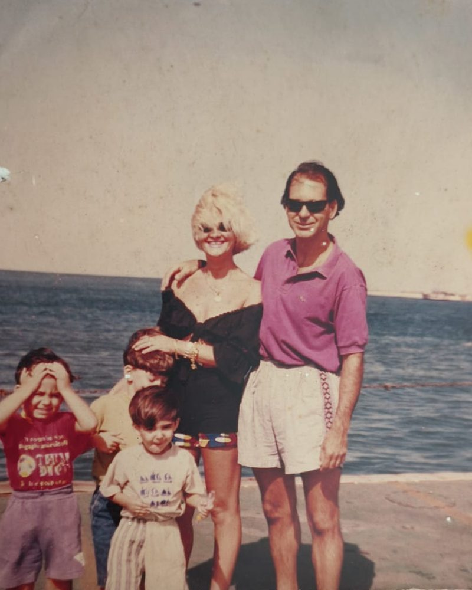
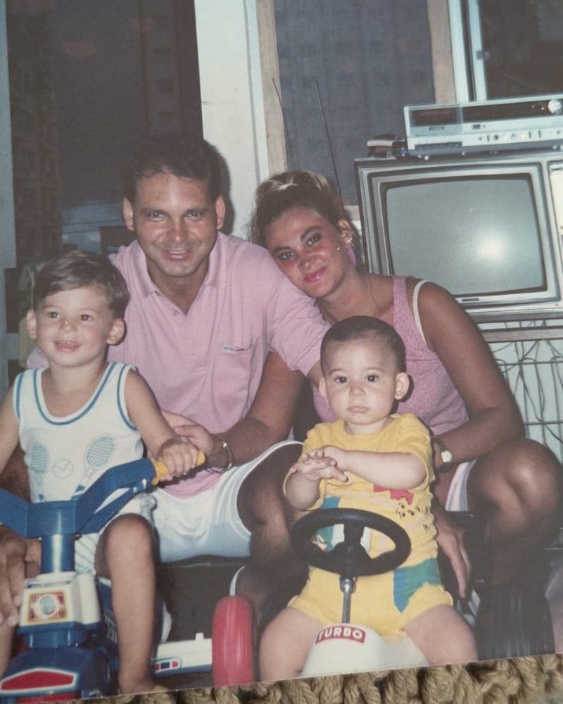
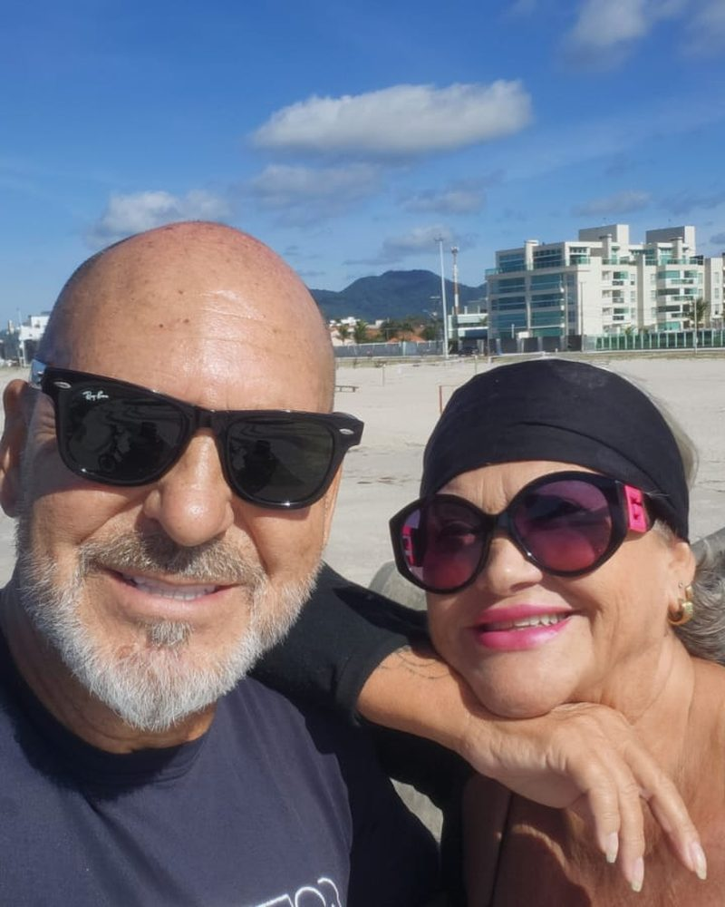
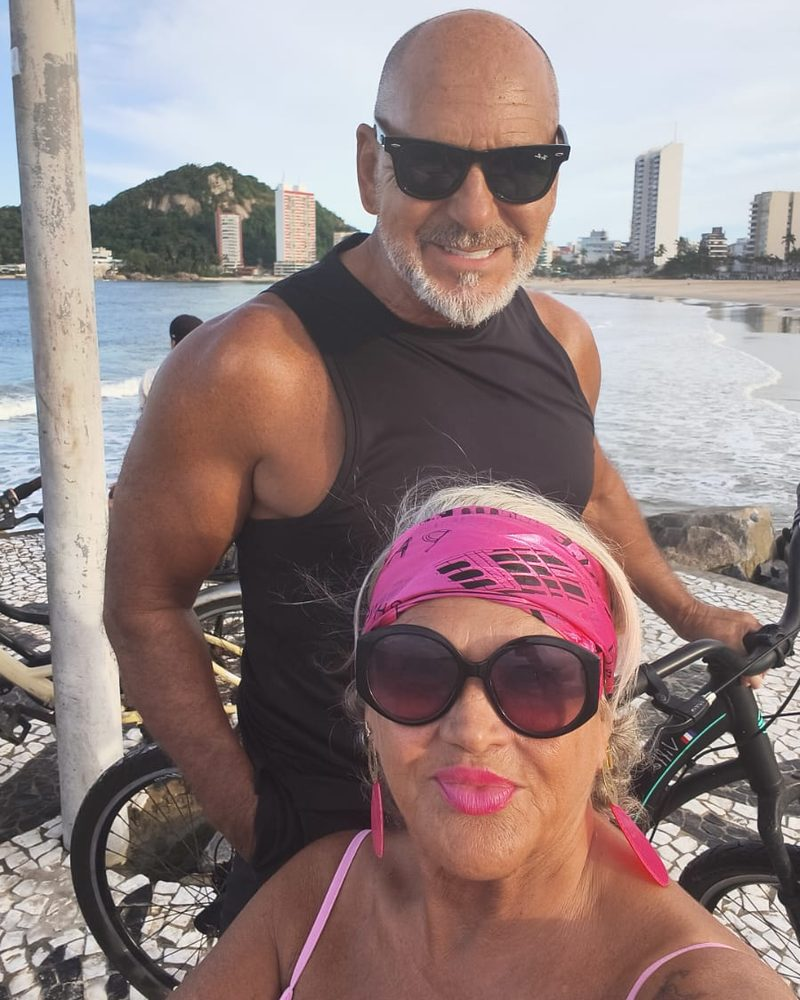

Não existe idade pra se cuidar.
E não é só do corpo que eu tô falando.
Treino de Respeito, com Alfredo. Firme aos 70.
O que a academia me ensinou
- Treino não é só músculo. É cabeça também.
- Quando eu gasto energia, a mente fica mais leve, o humor melhora e o dia rende.
- Não precisa ser atleta nem ter pressa. Precisa começar, e começar do jeito certo.
Quem é o Alfredo
Eu sou o Alfredo, tenho 72 anos e treino desde sempre.
Aprendi que treino não é só músculo. É cabeça também. Quando eu gasto energia na academia, a mente fica mais leve, o humor melhora e o dia rende.
Não precisa ser atleta nem ter pressa. Precisa começar, e começar do jeito certo. Aqui eu mostro o que faço e o que funciona pra quem tem mais de 60.
Se eu faço, você também faz. Bora?
Não é só do corpo
Cuidar é da cabeça, da vida e de quem está do lado. Faz tempo.

A família, à beira-mar, há uns bons anos. 
Em casa, com a esposa e os meninos. 
Com a esposa, na praia. Hoje. 
Bike na orla: a academia não é o único lugar.
Últimos vídeos
Direto do canal. Clica e assiste no YouTube.
Carregando os vídeos…
Bora começar?
Se inscreve no canal e me segue no Instagram. É de graça, é no seu ritmo, e eu te acompanho.